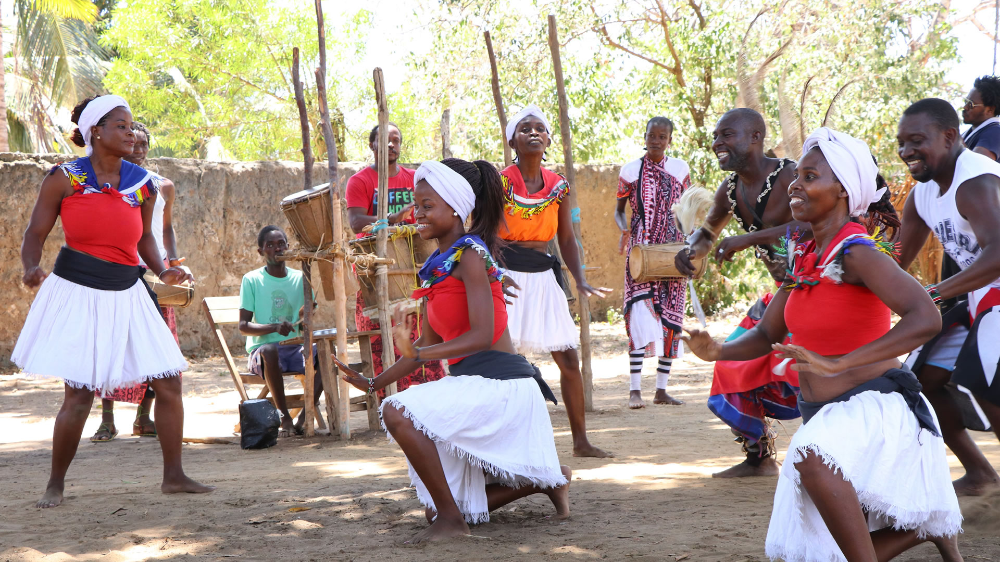
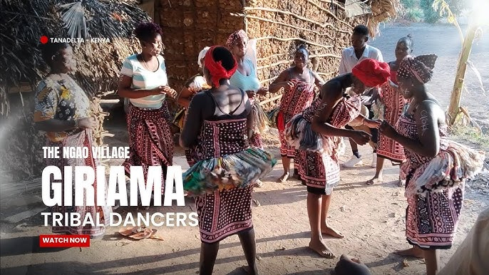
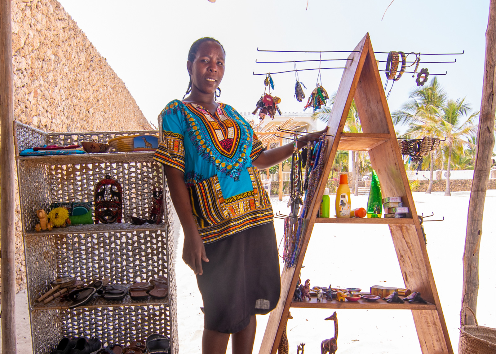

Matrimonio Tradizionale Giriama
Vivi un'esperienza unica partecipando a un autentico matrimonio tradizionale Giriama. Indossa gli abiti tipici della cultura locale, lasciati coinvolgere da danze, canti e rituali tramandati da generazioni e condividi momenti indimenticabili con la comunità in un vero villaggio immerso nella natura africana.
Un'occasione speciale per conoscere da vicino una delle tradizioni più affascinanti della costa del Kenya, vivendo una cerimonia ricca di simboli, musica e allegria.
✅ Incluso
- Noleggio degli abiti tradizionali Giriama
- Cerimonia con maestro di cerimonie locale
- Danze e canti tradizionali
- Utilizzo della location tradizionale
- Trasporto andata e ritorno
- Acqua minerale durante l'esperienza


Visita ai Villaggi Locali
Scopri la vera essenza del Kenya visitando i villaggi tradizionali della costa. Passeggia tra le abitazioni costruite con materiali naturali, incontra la popolazione locale e conosci da vicino usanze, tradizioni e stili di vita tramandati da generazioni. Durante la visita avrai l'opportunità di interagire con gli abitanti del villaggio, conoscere le attività quotidiane, le tecniche artigianali locali e l'importanza della comunità nella cultura africana. Un'esperienza autentica e coinvolgente per chi desidera andare oltre il turismo tradizionale e vivere il Kenya più genuino.
INCLUSO: Trasporto, guida locale parlante italiano, visita guidata del villaggio e supporto durante l'esperienza.
Scopri di più


Cucina Tradizionale Swahili
Un'esperienza autentica e coinvolgente per scoprire i sapori della costa kenyota e immergersi nella cultura locale attraverso la cucina.
In compagnia di uno chef locale imparerai a preparare i tradizionali chapati, il pane più amato della tradizione swahili, e parteciperai alle divertenti gare di MBUZI, l'antico strumento utilizzato per grattugiare il cocco fresco.
Al termine della cooking class potrai gustare una selezione di piatti tipici della cucina africana e swahili, oltre ad assaporare alcuni dei più popolari snack di strada, il tutto in un ambiente sicuro e accogliente presso la Fragola Safari House.
✅ Incluso
- Cooking class con chef locale
- Preparazione dei tradizionali chapati
- Esperienza con gli strumenti tradizionali swahili
- Cena tipica africana e swahili
- Esperienza culturale e gastronomica autentica
❌ Escluso
- Bevande durante i pasti


Pesca Tradizionale
Vivi un'autentica esperienza di pesca insieme ai pescatori locali della costa kenyota. Salirai a bordo delle tradizionali imbarcazioni utilizzate da generazioni e scoprirai le antiche tecniche di pesca tramandate nel tempo.
Durante l'uscita in mare potrai osservare da vicino il lavoro quotidiano dei pescatori, partecipare alle attività di pesca e conoscere il profondo legame che unisce le comunità costiere all'Oceano Indiano.
Un'esperienza unica per chi desidera scoprire la vera vita della costa africana, lontano dai percorsi turistici tradizionali e a stretto contatto con la cultura locale.
✅ Incluso
- Trasporto andata e ritorno
- Uscita in mare con pescatori locali
- Guida e assistenza durante l'esperienza
- Acqua minerale
- Attrezzatura tradizionale per la pesca
❌ Escluso
- Mance ed extra personali
- Bevande aggiuntive



Danze Tradizionali Giriama
Lasciati coinvolgere dall'energia e dai ritmi della cultura Giriama, una delle più affascinanti tradizioni della costa del Kenya. Assisterai a spettacolari esibizioni di danze e canti tradizionali accompagnati dal suono dei tamburi africani e da colorati costumi locali. Le danze Giriama rappresentano storie, celebrazioni e momenti importanti della vita della comunità. :contentReference[oaicite:0]{index=0}
Potrai interagire con i ballerini, apprendere alcuni passi tradizionali e scoprire il significato culturale di musiche, movimenti e rituali tramandati di generazione in generazione. Un'esperienza autentica che ti permetterà di vivere da vicino l'anima più genuina dell'Africa. :contentReference[oaicite:1]{index=1}
✅ Incluso
- Spettacolo di danze tradizionali Giriama
- Musica e canti dal vivo
- Partecipazione alle danze con la comunità locale
- Guida e spiegazione delle tradizioni culturali
- Trasporto andata e ritorno
- Acqua minerale durante l'esperienza
❌ Escluso
- Mance ed extra personali
- Bevande aggiuntive
Visita alle Scuole Locali
Scopri da vicino il sistema educativo kenyota visitando una scuola locale e vivendo un'esperienza autentica a contatto con studenti e insegnanti. Questa attività offre un'opportunità unica per conoscere la realtà quotidiana delle comunità locali e comprendere l'importanza dell'istruzione nello sviluppo del Paese.
Durante la visita potrai assistere alle lezioni, interagire con gli studenti, condividere momenti di scambio culturale e conoscere le sfide e i successi del sistema scolastico locale. L'accoglienza calorosa dei bambini e del personale scolastico renderà questa esperienza particolarmente emozionante e memorabile.
Un'attività ideale per famiglie, gruppi e viaggiatori che desiderano vivere il Kenya in modo responsabile e autentico, contribuendo a creare ponti culturali tra persone provenienti da realtà diverse.
✅ Incluso
- Trasporto andata e ritorno
- Visita guidata alla scuola locale
- Incontro con studenti e insegnanti
- Esperienza di scambio culturale
- Guida parlante italiano
- Acqua minerale durante l'esperienza
❌ Escluso
- Donazioni volontarie alla scuola
- Mance ed extra personali



Mercato Tradizionale di Watamu
Immergiti nei colori, nei profumi e nell'atmosfera autentica del Mercato Tradizionale di Watamu, uno dei luoghi più vivaci e caratteristici della costa kenyota. Accompagnato da una guida locale, scoprirai la vita quotidiana della popolazione e avrai l'opportunità di osservare da vicino le tradizioni commerciali della comunità.
Passeggiando tra le bancarelle potrai ammirare frutta tropicale fresca, spezie locali, artigianato africano, tessuti colorati e numerosi prodotti tipici della regione. Sarà inoltre possibile conoscere le abitudini alimentari locali e interagire con venditori e abitanti del posto in un contesto autentico e genuino.
Un'esperienza perfetta per chi desidera scoprire il vero volto del Kenya, lontano dai resort turistici, vivendo la quotidianità della popolazione locale e portando a casa ricordi unici e prodotti artigianali autentici.
✅ Incluso
- Trasporto andata e ritorno
- Guida locale parlante italiano
- Visita guidata del mercato
- Assistenza durante gli acquisti
- Acqua minerale durante l'esperienza
❌ Escluso
- Acquisti personali
- Mance ed extra personali
- Snack e bevande aggiuntive
Esperienza con le Donne Artigiane Locali
Scopri il talento e la creatività delle donne artigiane della costa del Kenya attraverso un'esperienza autentica e coinvolgente. Incontrerai gruppi di donne che tramandano da generazioni antiche tecniche di lavorazione artigianale, trasformando materiali locali in splendide opere d'arte e oggetti tradizionali. :contentReference[oaicite:0]{index=0}
Durante la visita potrai osservare da vicino la realizzazione di cesti intrecciati, gioielli in perline, decorazioni tradizionali e altri manufatti tipici della cultura locale. Le artigiane condivideranno le loro storie, le tradizioni della comunità e il significato culturale delle loro creazioni. :contentReference[oaicite:1]{index=1}
Avrai inoltre l'opportunità di partecipare ad alcune attività pratiche, imparando semplici tecniche artigianali e sostenendo direttamente le donne e le loro famiglie attraverso un turismo responsabile e sostenibile. Molti gruppi femminili della zona utilizzano l'artigianato come importante fonte di reddito e sviluppo comunitario. :contentReference[oaicite:2]{index=2}
✅ Incluso
- Trasporto andata e ritorno
- Incontro con le artigiane locali
- Dimostrazione delle tecniche artigianali tradizionali
- Partecipazione ad attività pratiche
- Guida parlante italiano
- Acqua minerale durante l'esperienza
❌ Escluso
- Acquisto di prodotti artigianali
- Mance ed extra personali
Contattaci
Hai domande o desideri organizzare il tuo safari in Kenya? Scrivici e ti risponderemo il prima possibile
Risposta entro 24 ore
OLTRE 1200 RECENSIONI A 5 STELLE: